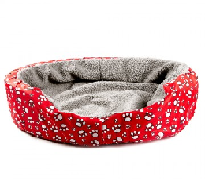
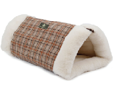

Cama para gatos
hecho con 30% de algodón.El preferido para gatos con piel sensible y/o alergias.
El sistema doble cuenta con 3 capas en su cojín lo cual otorga a
cada lado una sensación diferente.
La cama en peluche para gatos de Animal Factor será la mejor opción para
proporcionarle horas de placentero descanso a tu peludo. Es muy fácil de
limpiar, pues su forro es lavable.


La cueva túnel 2 en 1 para gatos Scotland estampado claro es un lugar de descanso ideal
gracias a su interior de terciopelo super suave y agradable al tacto.